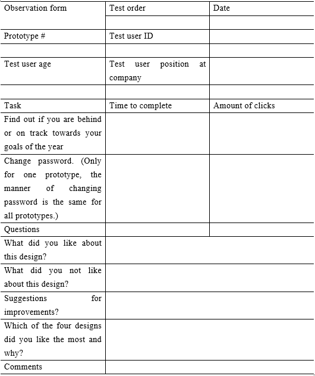

Your browser doesn't support the features required by impress.js, so you are presented with a simplified version of this presentation.
For the best experience please use the latest Chrome, Safari or Firefox browser.
The creation of a web-based performance visualization tool for a mid-size consultant company
By Albin Blent
Introduction
Background
- Forefront Consulting Group
- The challenge: Creating a Performance feedback portal
- Usability
Purpose
- Purpose of the system
- Provide performance feedback for employees
- Purpose of thesis work
- Evaluate usability methods when developing software
Research Questions
- Can a software system be developed to increase its’ usability?
- How can a software system be developed in order to increase usability?
Methods
&
Practices
Usability Methods
- Conceptual design phase
- Brainstorming
- Genius Design
- Processing phase
- Sitemap
- Wireframe
- Wireflow
- Detail design phase
Agile Software Development
- Planning phase
- Scenarios/User stories
- Requirements
- Design phase
- Coding phase
- Testing phase
- Unit testing
- Usability testing
Use Case - Must have requirements
Agile Software Development
- Planning phase
- Scenarios/User stories
- Requirements
- Design phase
- Coding phase
- Testing phase
- Unit testing
- Usability testing
Agile Software Development
- Planning phase
- Scenarios/User stories
- Requirements
- Design phase
- Coding phase
- Testing phase
- Unit testing
- Usability testing
SOLID
- Single Responsibility
- Open Closed
- Liskov Substitution
- Interface Segregation
- Dependency Inversion
Test Driven Development
- Unit test drives the development
- First write test...
- then implement new functionality to satisfy the test
- The tests creates a "safety-net"
- Refactoring
- Adding new functionality
Casy Study
Purpose of Case Study
- Evaluate usability theory
- Following known procedures to achieve usability
- Evaluate the result
- The Case Study is regarded as a success when...
- methods for increasing usability have been used in the development of the system and the usability of the new system have been evaluated.
- when the usability of the new system can be traced back to the methods used for achieving a higher usability.
Choise of Case Study
- Exploratory case study
- Focus on current events
- Embedded single case
Collecting data
- Genius design
- Sitemap
- Wireflow
- Observation tests - Paper prototypes
- Observation tests/Interview - System design
Inspiration for Genius Design
Sitemap
Wireflow
Collecting data
- Genius design
- Sitemap
- Wireflow
- Observation tests - Paper prototypes
- Observation tests/Interview - System design
Observation form

Collecting data
- Genius design
- Sitemap
- Wireflow
- Observation tests - Paper prototypes
- Observation tests/Interview - System design
Collecting data
- Genius design
- Sitemap
- Wireflow
- Observation tests - Paper prototypes
- Observation tests/Interview - System design
Collecting data
- Genius design
- Sitemap
- Wireflow
- Observation tests - Paper prototypes
- Observation tests/Interview - System design
Findings
Recap
The Case Study is regarded as a success when...
- methods for increasing usability have been used in the development of the system and the usability of the new system have been evaluated.
- when the usability of the new system can be traced back to the methods used for achieving a higher usability.
Case Study Findings & Results
Paper prototypes - Average time to complete task (sec)
| Prototype #1 |
Prototype #2 |
Prototype #3 |
Prototype #4 |
| 55 |
26 |
27 |
44 |
Paper prototypes - Completion of task
| Prototype #1 |
Prototype #2 |
Prototype #3 |
Prototype #4 |
| 66% (2/3) |
100% (3/3) |
100% (3/3) |
100% (3/3) |
System design - Average time to complete task (sec)
21 sec
System design - Completion of task
100% (3/3)
Case Study Findings & Results cont.
Inteeviewee appriciated:
- The graph reference line
- Non-functional requirement No. 17 and No. 19
- That he did not have to make any calculations
- Non-functional requirement No. 20
- The numbers displayed in percent and absolute
- Non-functional requirement No. 18
Thesis Conclusion
Research Questions
- Can a software system be developed to increase its’ usability?
- How can a software system be developed in order to increase usability?
- Answer: By using methods for increasing usability during the development of the system, such as Genius Design and Observation testing